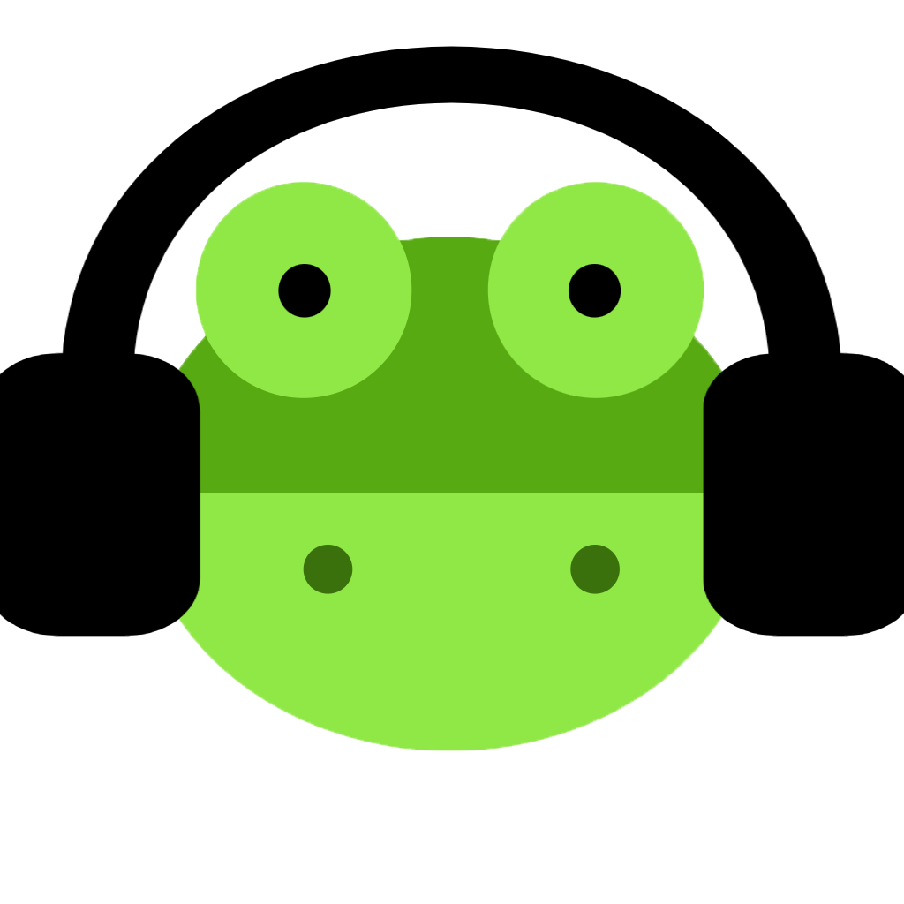

<nav class="navbar navbar-expand-md d-flex justify-content-between">
    <a routerLink="/home" class="navbar-brand title" href="#">
      
      M<em>ediaFroggy</em>
    </a>
    <button class="navbar-toggler" type="button" data-toggle="collapse" data-target="#navbarNav" aria-controls="navbarNav" aria-expanded="false" aria-label="Toggle navigation" (click)="toggleNavbar()">
      <span class="navbar-toggler-icon"></span> <!-- Icono de menú -->
    </button>
    <div class="collapse navbar-collapse" id="navbarNav" [class.show]="isNavbarOpen">
      <ul class="navbar-nav mx-auto">
      </ul>
      <ul class="navbar-nav logout">
        <li class="nav-item">
          <a routerLinkActive="active" class="nav-link" (click)="onClick()">INICIAR SESIÓN</a>
        </li>
      </ul>
    </div>
</nav>
